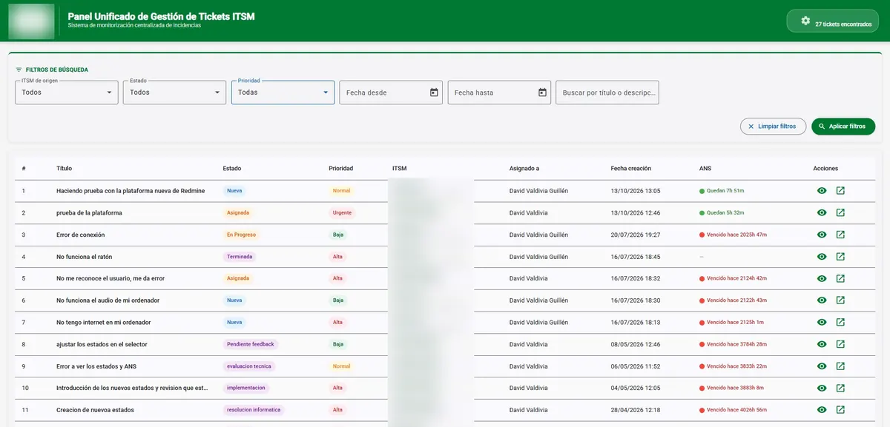
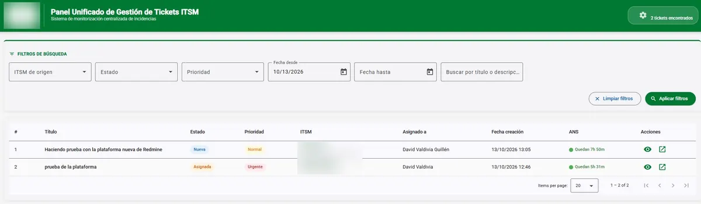
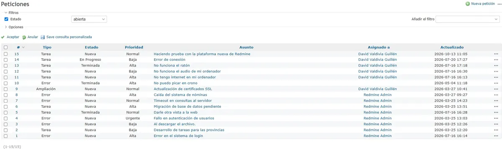
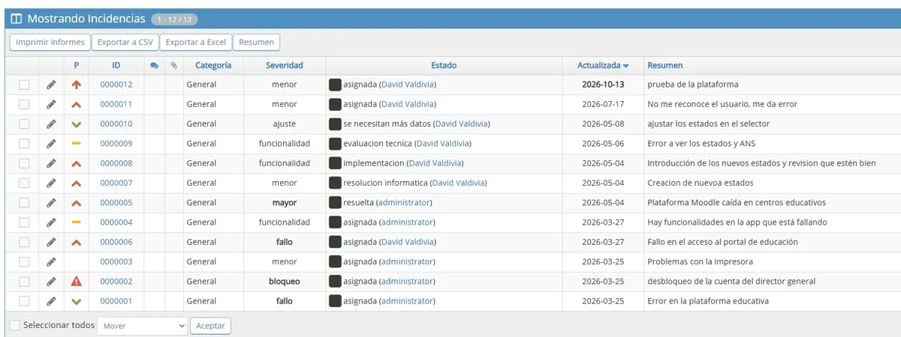

Panel ITSM unificado
Aplicación empresarial que reúne en una sola pantalla las incidencias de Redmine y Mantis Bug Tracker, en tiempo real. Incluye filtros dinámicos, indicadores SLA y branding corporativo.
La lógica de negocio, en TypeScript, normaliza los estados de cada herramienta y maneja tanto SOAP como REST.
- Angular 17
- Node.js
- TypeScript
- Express
- MySQL 8
- Docker
- REST / SOAP
Flujo de datos
- RedmineRESTMantis BTSOAP
- API Node.js + ExpressNormaliza estados · filtros · SLA
- MySQL 8Docker Compose
- Panel Angular 17Incidencias en tiempo real



